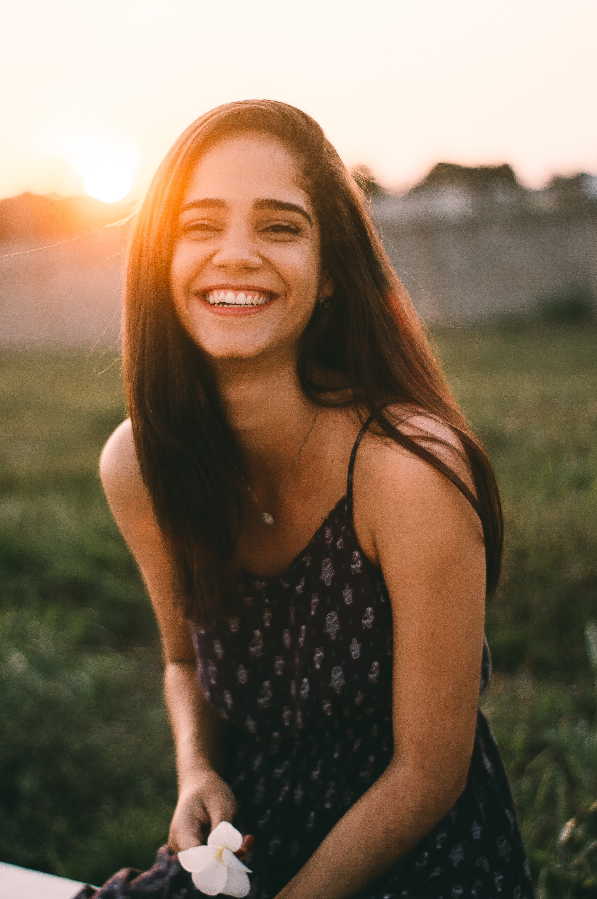

DESKRIPSI
Healme.id adalah platform remaja Indonesia dari berbagai jurusan Perkuliahan yang aktif dibidang kesehatan terutama mental (Psikologi, Kedokteran, Keperawatan, Fisioterapi dan lainnya) yang bertujuan untuk memberi Edukasi masyarakat Indonesia terutama anak muda dalam hal kesehatan mental dan fisik melalui media social seperti Instagram, twitter, facebook, website.
VISI
Mendirikan perusahaan Startup Unicorn yang bergerak dibidang kesehatan khususnya kesehatan mental dan dapat membantu masyarakat memahami bagaimana menjaga kesehatan mental dan penyembuhannya.
MISI
- Membentuk komunitas online mental health
- Mengadakan edukasi kesehatan mental untuk masyarakat
- Menjadikan masyarakat paham atas kesehatan mental